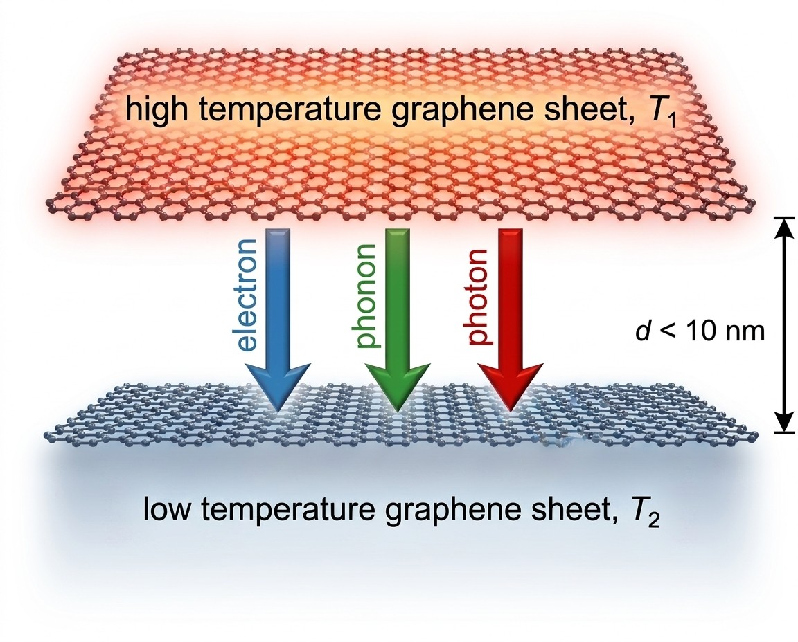

Hi, I'm
I am a Ph.D. candidate in Mechanical Engineering at the University of Maine in Orono, Maine, with research focused on nanoscale heat transfer and computational modeling. My broader engineering experience includes computational fluid dynamics, thermal systems, HVAC engineering, and mechanical design.
Current interests: heat transfer from the nanoscale to larger thermal systems, CFD, data-center cooling, HVAC, and mechanical design.

My work is in heat transfer and thermal engineering, using computational modeling across length scales. In my Ph.D., I use first-principles calculations and thermal-transport models to study nanoscale radiative heat transfer. I also have experience with CFD, thermodynamic analysis, large-scale numerical simulation, and mechanical design. In industry, I worked on HVAC and utility systems at a pharmaceutical manufacturing facility, where I operated chillers, boilers, AHUs, and the BMS, handled commissioning and troubleshooting, and led a 24-person operations team.
Full letters of recommendation are available on request.
This list is only a summary. The work demonstrating these skills — papers, figures, code, and reports — is on the Research and Projects pages.
I am open to research collaborations and engineering opportunities in computational heat transfer from the nanoscale to the macroscale, thermal systems, data-center cooling, and HVAC. You can reach me by email or through LinkedIn.